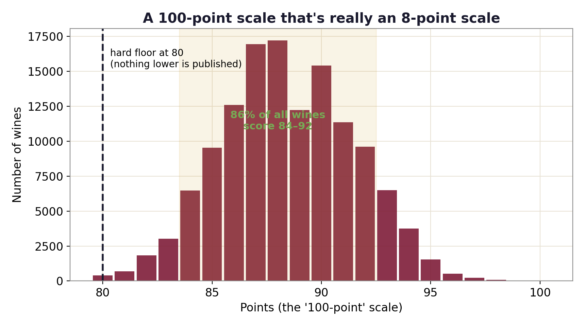
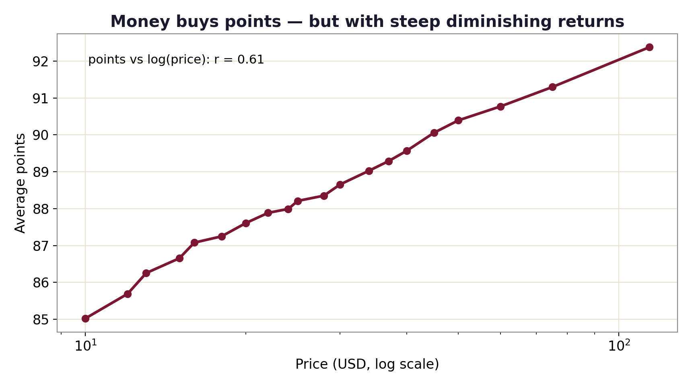
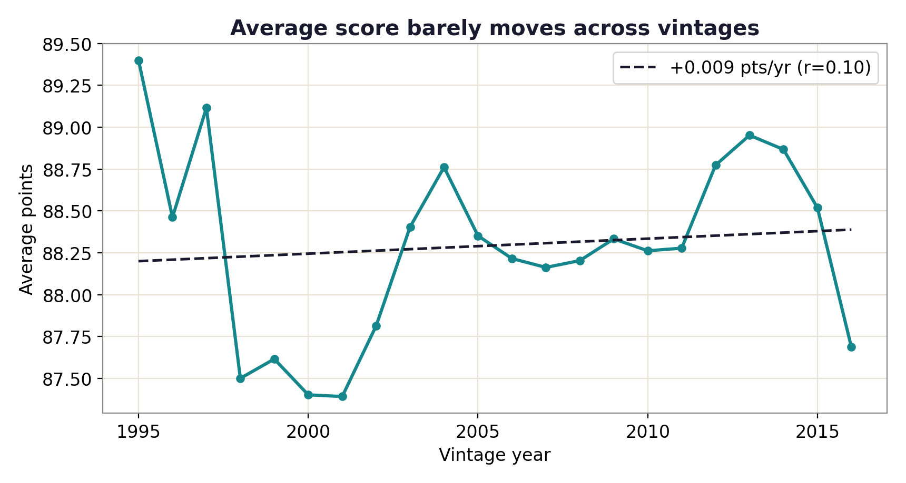
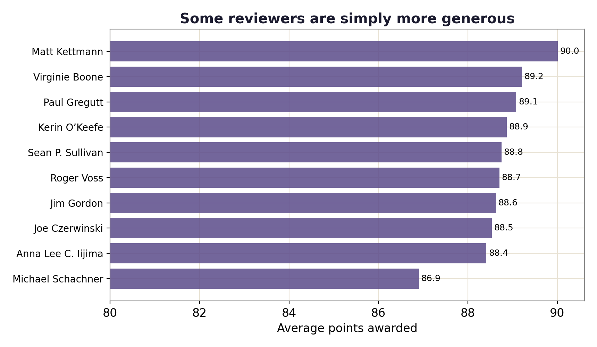

Data story · ~130,000 wine reviews
Wines are rated on a "100-point scale." So why does it feel like everything scores around 90? I ran the numbers on 130,000 professional reviews.
Wine is scored from 50 to 100, but in practice that scale barely exists. Across ~130,000 Wine Enthusiast reviews, nothing is published below 80, the average is 88, and 86% of all wines fall between 84 and 92. Almost the entire "100-point" range is dead space. When failing grades are never printed and everything clusters in an 8-point band, a high score stops meaning much.

Price and score are related (correlation 0.61 against log-price), but you pay dearly for each point. A roughly $10 wine averages about 85 points; a $100 wine averages about 92. Spending ten times as much buys you, on average, about seven points — and most of those points come early.

You might guess the scores have crept up over time. They haven't: average points are essentially flat across vintages (about 0.09 points per decade). The compression isn't a recency trend — it's baked into how the scale is used.

Who tastes the wine moves the number. Among the most prolific reviewers, average scores range across 3.1 points — roughly the same boost you'd get by paying ten times more for the bottle.

Treat the number as a coarse signal, not a verdict. The gap between an 88 and a 90 is mostly noise — vintage, reviewer, and rounding. If you're hunting value, the early part of the price curve is where the points are cheapest, which is exactly the thread I pull on in my New World vs Old World wine value work.
fetch_data.py + analyze.py in the repo.